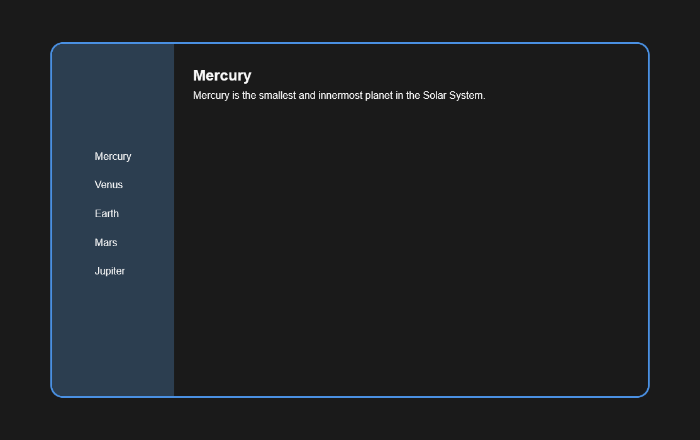

Layouts
Enjoy these layouts made by me! If you use these layouts as-is or as a base, please see my terms of use.
Websites in a Box
Below you'll find what I'm calling "websites in a box" which essentially means you can get a site up with just a single index.html file!
These themes are responsive and have multiple "pages" with no JavaScript, inspired by John Doe's Page.
Beachy Vibes

Retro Web
Smol Web
Museum of Arts
Space Exploration

Space Exploration Alt
Terms of Use
Please link back to this site in some capacity if you use one of my themes.
One way you can link to me is by using this button!
More Layouts
Check out the links page to find more cool free layouts.